从零开始的IDA¶
本文为重构版本
因为猫猫觉得以前的那篇《从零开始的IDA》讲的过于粗糙，于是决定对这篇教程进行重构。
以前的编写者们为此付出了许多心血，所以猫猫重构时保留了原始md文档，
如果读者感兴趣的话，可以前往Hello-CTF的仓库查看原文。
感谢各位创作者们的付出！
写在前面
本文为新手向教程，内容主要基于未优化或优化较低的简单程序，在这类情况下 IDA 的反编译结果通常较为直观；
但在复杂或经过混淆的程序中，这些方法 可能不再完全适用 。
本文主要讲解如何使用 IDA Pro 进行基础逆向分析，因此不会深入介绍其全部功能。
感兴趣的读者可以在掌握基本使用后，再进一步学习 IDA 的高级功能及快捷键。
为了降低初学门槛，除常用快捷键外，本文不会涉及过多操作细节。
希望读者在阅读过程中能够跟随教程完成题目复现，相关题目可在 这里 获取。
既然要上战场了，拥有一把趁手的“兵器”很重要，这里我们介绍一款著名逆向工具：IDA Pro。
什么是 IDA¶
IDA Pro（全称 Interactive Disassembler Professional，通常简称为 IDA）是 Hex-Rays 公司开发的一款强大的逆向工具，集反汇编、反编译和调试于一体。
它的反汇编器支持多种处理器架构和文件格式，在嵌入式系统、移动应用以及常规软件的静态分析中表现出色。对于未经过强混淆或复杂保护的二进制程序，IDA 通常能够生成结构较为清晰、可读性较好的分析结果；但在面对复杂混淆或加壳程序时，其分析能力可能受到限制，往往需要结合动态调试等手段进行进一步分析。
此外，IDA Pro 也提供了内置调试功能，支持本地与远程调试以及多种调试目标。不过在实际逆向分析中，通常会与专用调试器（如 x64dbg、GDB）配合使用，以获得更灵活和稳定的调试体验。
请注意你的IDA Pro版本……
根据Hex-Rays的发行公告，IDA Pro已经在8.3版本中弃用了IDA(32-bit)，并在9.0版本中正式将两个IDA可执行程序合并为一个，这意味着最新版本的 IDA Pro 中我们已经不会再看到存在两个 IDA 可执行程序了。
但这并不意味着我们从此不再能反编译32-bit/64-bit程序了，相反，现在的IDA Pro已经同时兼容了这两个版本！
“我们在几个版本前就弃用了IDA32。在IDA 9.0中，只需一个IDA二进制即可处理32位和64位代码。”
“将遗留IDB转换为I64文件格式是透明的，由IDA自动执行。”
IDA 的基本操作¶
想要使用 IDA ，我们需要学习一点基本操作。
请先下载BaseCTF 2024新生赛题目《You are good at IDA》的 附件 ，解压后拖动到 IDA Pro 上打开。
前期我们基本不需要修改什么内容，保持默认配置一路 OK/Yes 下去即可。
切换汇编视图/图形视图¶
如果你正确打开了 IDA，你现在看到的应该类似这个界面：
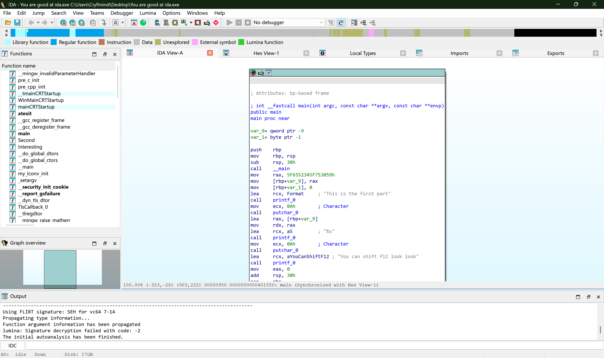
这就是 IDA 的图形视图（Graph View），你可以在这里看到程序各部分汇编块的执行流程。
如果想看完整的汇编，可以按下你的空格键(Space)，IDA 就会从图形视图切换到汇编视图(Text View)：
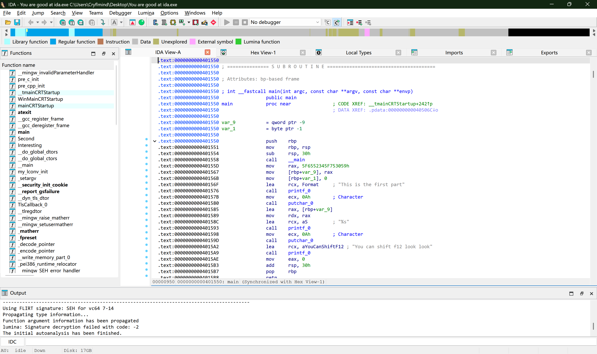
再按一下空格，IDA就会再次返回图形视图，此时上述操作都是在 IDA View-A 下进行的。
你可以尝试多按几下你的空格~
回味一下手感~（bushi）
反编译: 好读的伪代码¶
如果只阅读汇编的话，看久了难免会有种无力感：你让我看懂这堆东西？
虽然汇编知识后面确实需要掌握，但我们现在有一些更好的选项。
你可以试着按下你的 F5 ，部分笔记本可能需要按住 Fn 再按 F5：
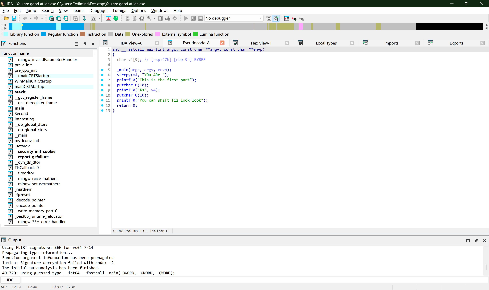
可以看到 IDA 跳转到了 Pseudocode-A ，难懂的汇编代码变成了我们相对熟悉一些的 C 风格伪代码。
这就是伪代码视图(Pseudocode View)，IDA 会通过程序的机器码尝试生成接近 C 语言风格的伪代码，但该结果并不等同于原始源码。
我们已经在前面的 C 语言基础教程中介绍过伪代码的阅读了，这里就不多赘述，不过我们可以看到第一部分的flag：Y0u_4Re_。
如果你想在伪代码视图和汇编视图/图形视图之间切换的话，只需要按下你的 Tab 即可。
小结
目前我们已经学习了以下几个快捷键：
- 切换汇编视图/图形视图：空格(Space)
- (重新)进行反编译：F5
- 在伪代码视图和汇编视图/图形视图之间切换：Tab
可以多按几次找找手感~
Strings：程序中的字符串¶
如果你能读懂伪代码的话，你应该能知道这个程序提示你使用 Shift + F12 可以查看一些东西。
不妨试一试，可以看到 IDA 来到了一个新的选项卡 Strings：
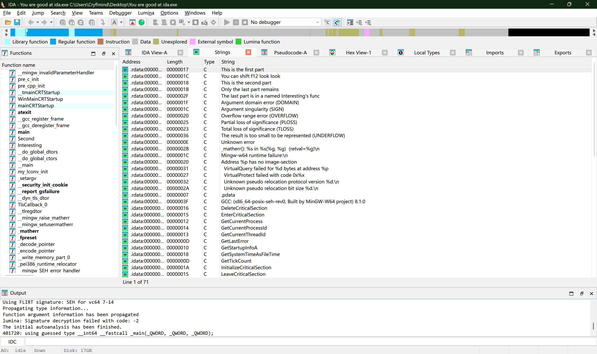
这里展示的是 IDA 在解析程序时 识别出来的 所有“疑似字符串”，除了一些编译器留下的字符串以外，我们还能看到一些明显是人手动写进去的东西。
如果想要查看某个字符串出现的位置的话，可以双击对应的字符串，这里我们以双击 This is the first part 为例：
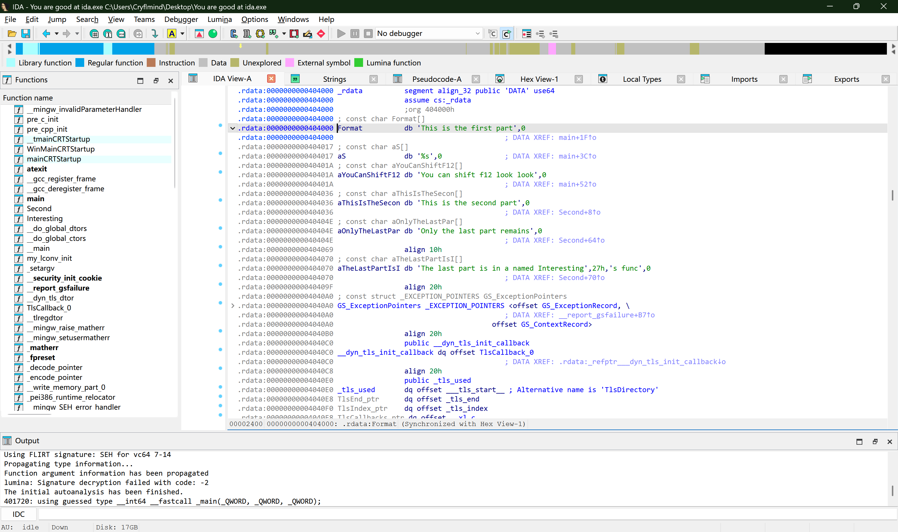
可以看到程序跳转到了对应的字符串，这里字符串下面有一个 ; DATA XREF:main+1F↑o ，这是 IDA 识别出的引用该字符串的程序的位置。
双击 main+1F↑o ，程序就会自动跳转到对应的位置：
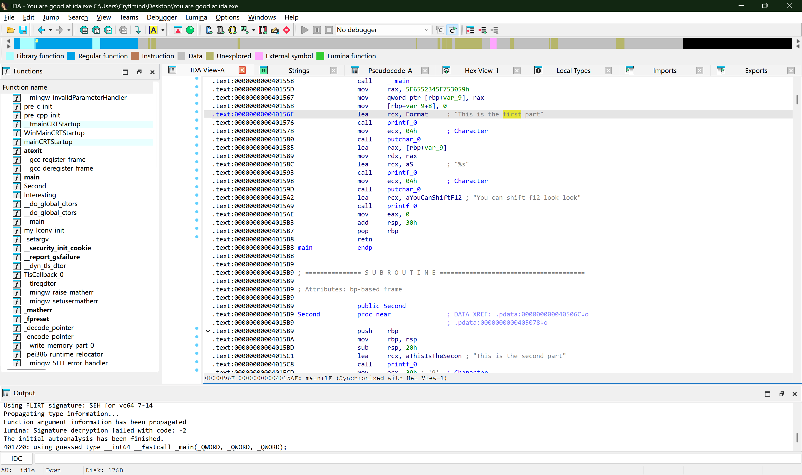
程序跳转到了汇编视图，之后就可以使用 F5 将这段汇编反编译为伪代码了。
这是快速定位目标函数的一个常用技巧
如果程序在编译时删除了符号表，IDA 将可能无法直接标注 main 。
解决方法是：虽然主函数无法正确识别，但是主函数中含有的字符串可能依旧正常编码在程序中。
此时就可以通过定位字符串的方式来确定主函数的位置。
不过，实战中我们其实有更多的定位方式，字符串法只是常见技巧之一。
转换：似曾相识的数字¶
仿照我们刚才查找字符串的逻辑，我们很容易可以发现一个名为 Second 的函数：
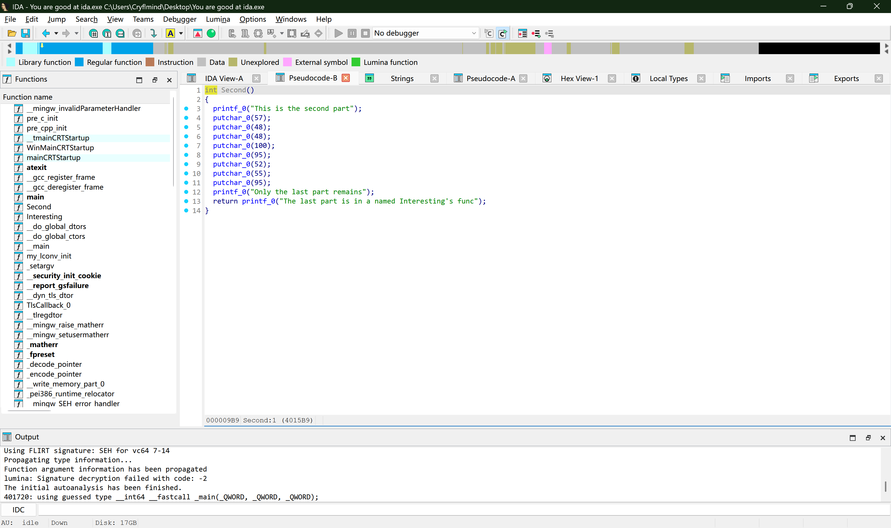
如果你对 ASCII 编码比较熟悉的话，可以发现这些数值大多落在可打印字符的范围内。
只是，看起来反编译视图中这些数据默认按数值显示，并没有正确解析成字符，怎么办呢？
我们只需要右键一下数据所在的位置：
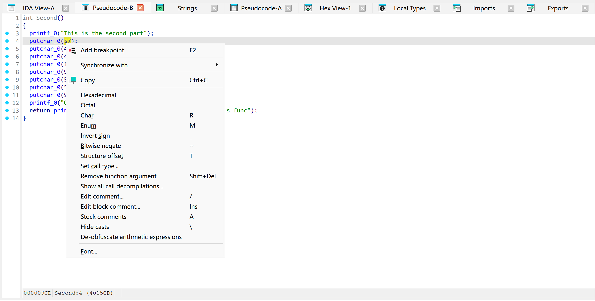
在右键菜单中，IDA提供了一些显示选项，比如这里我们可以点击 Char (或者使用快捷键 R )将数据转换为字符显示：
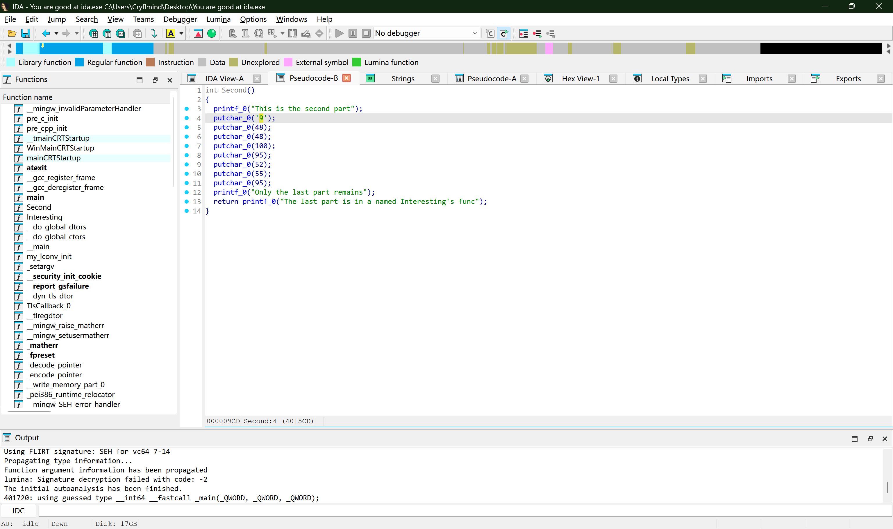
不过，对于这种需要大量使用的操作，还是直接按 R 比较好用。
在伪代码视图下多戳几下 R 我们就可以得到：
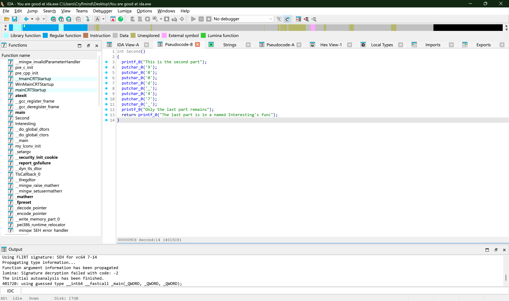
这就是第二部分flag的内容：900d_47_ 。
当然，另一种查看转换结果的方式是直接在汇编视图下进行查看：
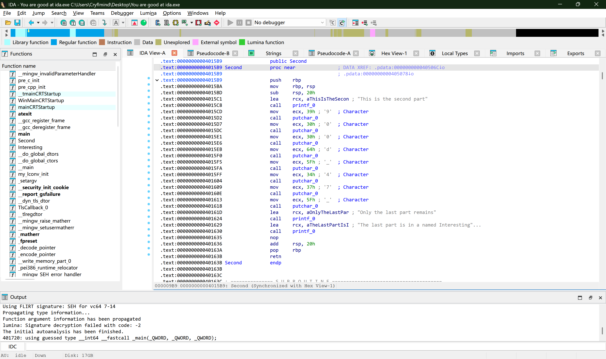
右键菜单中提供了各种各样的转换方式
对于初学者而言，这些快捷键并不是刚开始学就要都记住的。
你可以选择刚开始先进行右键，然后慢慢的记忆这些快捷键。
捞针：快速找到目标函数¶
刚才在 Second 函数中我们找到了一条提示：The last part is in a named Interesting's func 。
它提示我们去找一个名为 Interesting 的函数。
我们可以在 IDA 的左侧看到一个函数窗口(Functions)：
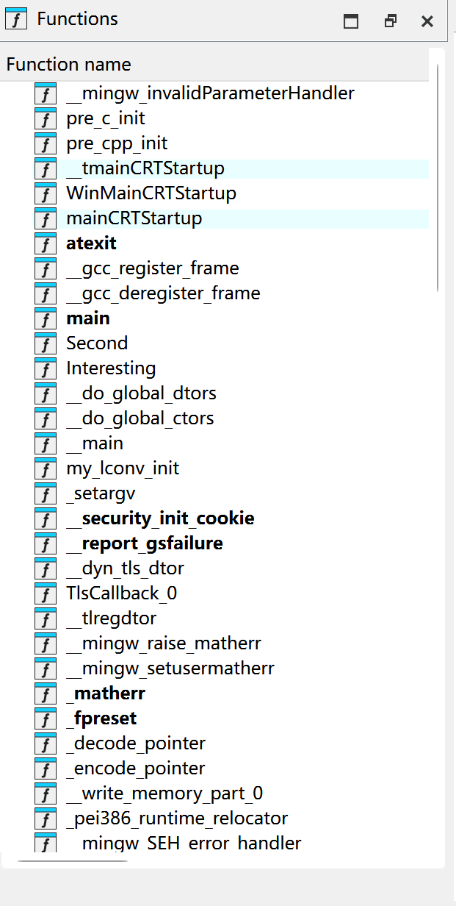
除了在里面慢慢翻找之外，一个更快的方法是点击一下函数窗口然后使用 Ctrl + F 搜索：
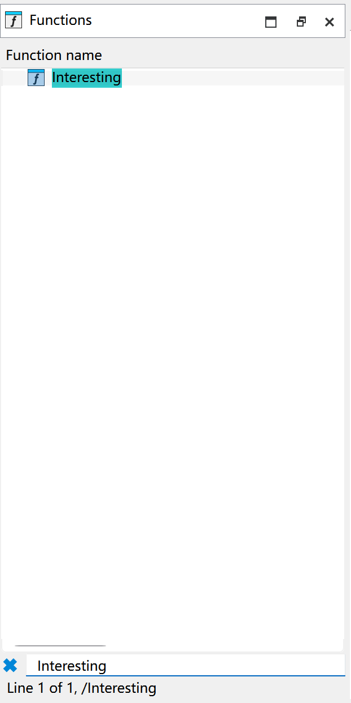
双击即可跳转到对应函数：
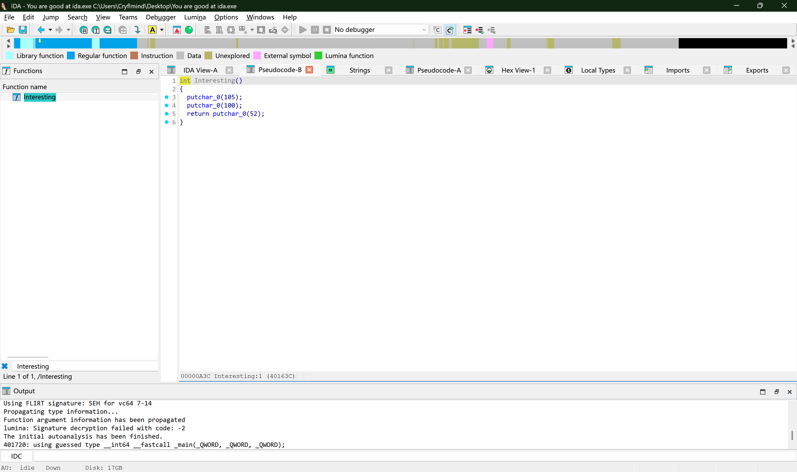
使用 R 转换为字符即可得到第三部分flag：id4。
所以本题最终的flag为：
在继续阅读前……
请确认你已经初步熟悉了上述题目过程中的相关操作，我们将在下一题中再次遇见其中的一些操作。
至少请确定你还记得上面讲了什么。
IDA 实战初步：ez_maze¶
下面我们继续以BaseCTF 2024新生赛题目《ez_maze》为例，介绍一些 IDA 常用的其他操作。
你可以在 这里 下载到题目的附件。
首先尝试运行一下附件，发现程序报错，根据报错文件缺失结合题目提示，猜测本题应该是故意不让人成功运行的。
危险操作
请注意，逆向工程中接触的文件可能是病毒！逆向工程的主要工作就是分析程序逻辑，病毒分析也属于这一范畴。
所以，如果拿到一个未知程序，最好先进行静态和云沙箱分析，在确认风险尽量可控之后，再尝试在虚拟机等隔离环境中运行。
目前笔者见过的案例包括但不限于有选手的电脑/服务器被挂上挖矿程序挖矿、文件都被病毒加密等等……
逆向千万条，安全第一条，操作不规范，机器两行泪喵~
那就拖到 IDA 上看一眼吧，虽然报错了，但是一路 Yes/OK 下去还是能打开的：
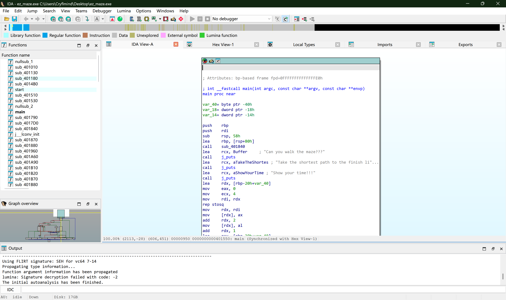
使用 F5 反编译可以看到如下代码：
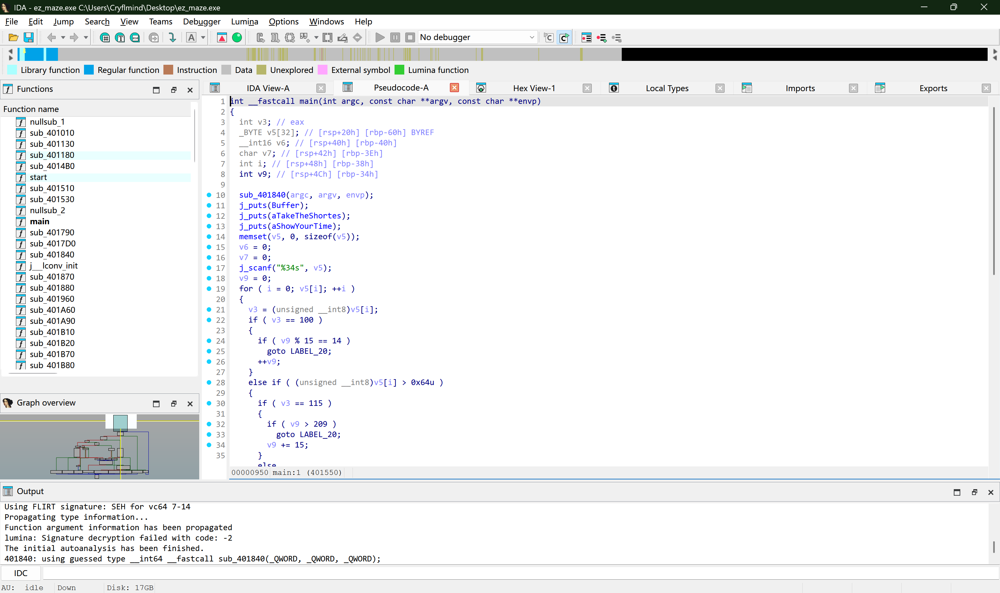
int __fastcall main(int argc, const char **argv, const char **envp)
{
int v3; // eax
_BYTE v5[32]; // [rsp+20h] [rbp-60h] BYREF
__int16 v6; // [rsp+40h] [rbp-40h]
char v7; // [rsp+42h] [rbp-3Eh]
int i; // [rsp+48h] [rbp-38h]
int v9; // [rsp+4Ch] [rbp-34h]
sub_401840(argc, argv, envp);
j_puts(Buffer);
j_puts(aTakeTheShortes);
j_puts(aShowYourTime);
memset(v5, 0, sizeof(v5));
v6 = 0;
v7 = 0;
j_scanf("%34s", v5);
v9 = 0;
for ( i = 0; v5[i]; ++i )
{
v3 = (unsigned __int8)v5[i];
if ( v3 == 100 )
{
if ( v9 % 15 == 14 )
goto LABEL_20;
++v9;
}
else if ( (unsigned __int8)v5[i] > 0x64u )
{
if ( v3 == 115 )
{
if ( v9 > 209 )
goto LABEL_20;
v9 += 15;
}
else
{
if ( v3 != 119 )
{
LABEL_21:
j_puts(aInvalidInput);
return -1;
}
if ( v9 <= 14 )
goto LABEL_20;
v9 -= 15;
}
}
else
{
if ( v3 != 97 )
goto LABEL_21;
if ( !(v9 % 15) )
{
LABEL_20:
j_puts(aInvalidMoveOut);
return -1;
}
--v9;
}
if ( asc_403020[v9] == 36 )
{
j_puts(aInvalidMoveHit);
return -1;
}
if ( asc_403020[v9] == 121 )
{
j_puts(aYouWin);
j_puts(aPlzBasectfLowe);
return 0;
}
}
j_puts(aYouDidnTReachT);
return 0;
}
IDA 有时候会选择将字符串的一部分作为名称，比如上面的 aYouWin 就是获胜的提示 You win! ，这些 蓝色名称 都是可通过双击跳转的。
首先使用 R 将疑似 ASCII 码的地方恢复一下：
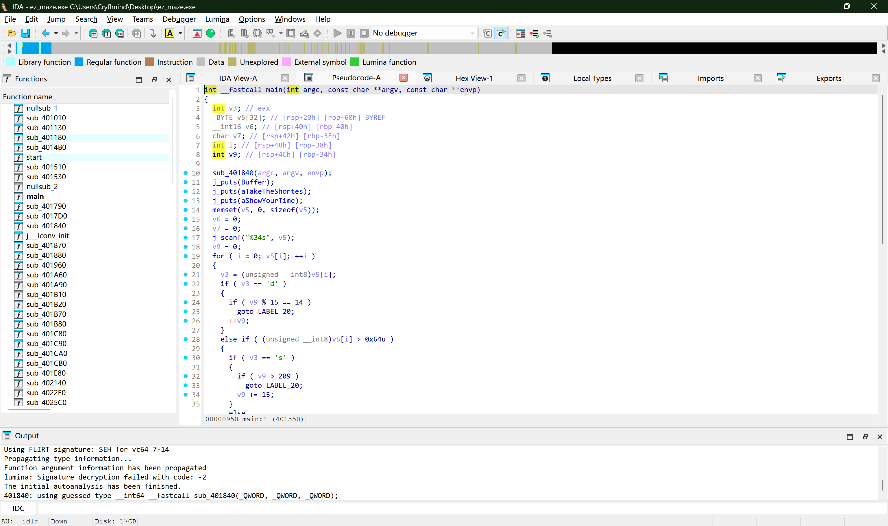
可以看到 WASD 这些游戏移动常常使用的按键，大胆猜测一下这里也是用于移动。
那么 v9 就是角色当前所在的位置索引，为了方便我们可以给 v9 改个名。
改名：却是旧相识¶
首先我们对着 v9 右键：
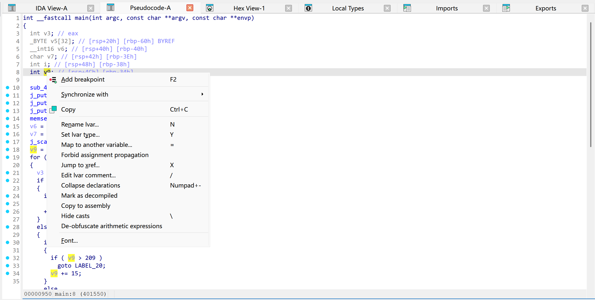
在右键菜单中我们选择 Rename lvar... (或者直接按 N)进行重命名，这里我们改成 Pos :
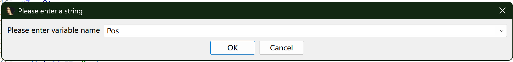
确认后，代码中所有的 v9 都被改名为 Pos 了。
改名的好处
将一个变量名修改成自己熟悉的意思，最大的好处就是可以更好的理清变量之间的关系。
比如如果你不知道某个函数的传参是什么类型，不妨给变量改个名（比如Input，Buf……），
这样你就可以更好的区分这些变量了。
当然，能改名的并不只有变量，你也可以把 LABEL_20 改名成 OutOfBound 、把 LABEL_21 改名成 InvalidMove ……
修正：IDA也会推断失败¶
我们可以注意到，变量 v5[i] 的前面有一个强制类型转换 (unsigned __int8)，说明 v5[i] 的类型可能是不理想的。
对于这种情况，我们可以手动修复 v5[i] 的类型，只需要先对着 v5 右键：
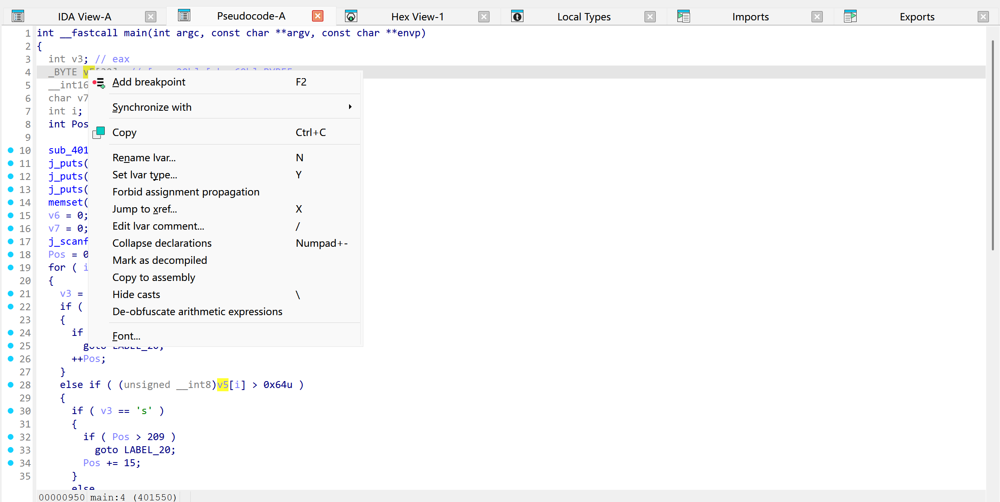
选择 Set lvar type... (或者按 Y)进行修改，这里我们把前面的类型直接修改为unsigned char：
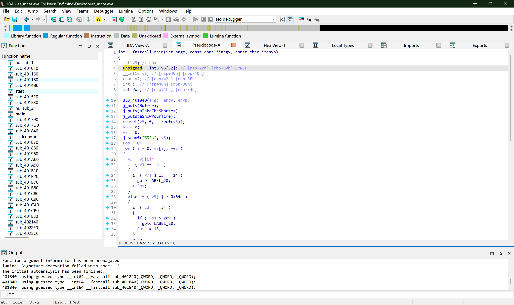
可以看到前面的强制类型转换消失了，说明识别的类型被修复了。
如果你看到有些代码写得很抽象……
在前面的 C 语言基础中我们介绍了 a[i] 的几种写法，实际逆向过程中这几种写法可能都会出现。
如果 IDA 在反编译过程中没有正确将其识别为 a[i] ，你可以手动将其修复为数组，过程和这里也是类似的。
“很多代码读起来抽象其实是因为 IDA 没有正确识别其数据类型”
于是我们得到了修正后的反编译伪代码：
int __fastcall main(int argc, const char **argv, const char **envp)
{
int v3; // eax
unsigned __int8 move[32]; // [rsp+20h] [rbp-60h] BYREF
__int16 v6; // [rsp+40h] [rbp-40h]
char v7; // [rsp+42h] [rbp-3Eh]
int i; // [rsp+48h] [rbp-38h]
int Pos; // [rsp+4Ch] [rbp-34h]
sub_401840(argc, argv, envp);
j_puts(Buffer);
j_puts(aTakeTheShortes);
j_puts(aShowYourTime);
memset(move, 0, sizeof(move));
v6 = 0;
v7 = 0;
j_scanf("%34s", move);
Pos = 0;
for ( i = 0; move[i]; ++i )
{
v3 = move[i];
if ( v3 == 'd' )
{
if ( Pos % 15 == 14 )
goto OutOfBound;
++Pos;
}
else if ( move[i] > 100u )
{
if ( v3 == 's' )
{
if ( Pos > 209 )
goto OutOfBound;
Pos += 15;
}
else
{
if ( v3 != 'w' )
{
InvalidMove:
j_puts(aInvalidInput);
return -1;
}
if ( Pos <= 14 )
goto OutOfBound;
Pos -= 15;
}
}
else
{
if ( v3 != 'a' )
goto InvalidMove;
if ( !(Pos % 15) )
{
OutOfBound:
j_puts(aInvalidMoveOut);
return -1;
}
--Pos;
}
if ( Maze[Pos] == '$' )
{
j_puts(aInvalidMoveHit);
return -1;
}
if ( Maze[Pos] == 'y' )
{
j_puts(aYouWin);
j_puts(aPlzBasectfLowe);
return 0;
}
}
j_puts(aYouDidnTReachT);
return 0;
}
导出：断断续续的数据¶
程序的逻辑已经很清楚了，就是一个普通的走迷宫游戏。
现在我们只剩下最后一个问题了，如何导出数据？
如果你直接在 Strings 里面进行复制的话，你会得到这串东西：
seg000:0000000000403020 000000E2 C x$$$$$$$$$$$$$$&&&&&&$$$$$$$$$&$&$$&$$&&&&&$$&$&$$$&&$$$$&$$&$$$&&&$$$$$&$$&$$$&$&&$&$$$$$&$$$&$&$$&&&$$$&&&&&$&&&&$&$$$$$$$$$&&&&&&$$$$$$$$$&$$$$$$$$$$$&&&&$$&&&$$$$$$&&&&&&&$$$$$$$$$$$$$$&$$&$$$$$$$$$$$&$&$$$$$$$$$&&&&&&&&y
但其实，你可以先双击来到字符串对应的位置，然后选中字符串：
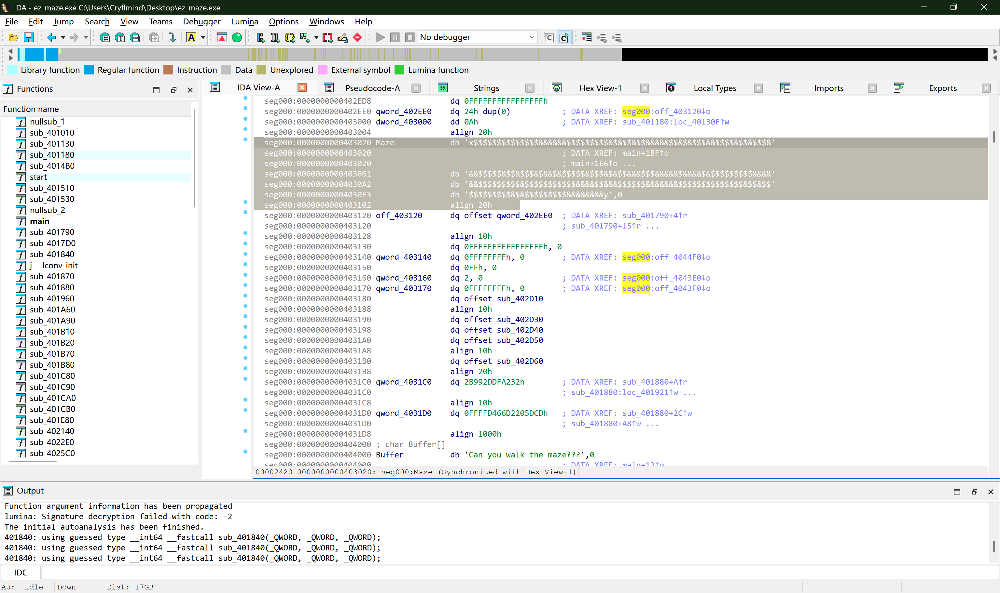
之后，我们按下 Shift + E ，然后以字符串形式导出(Export)：
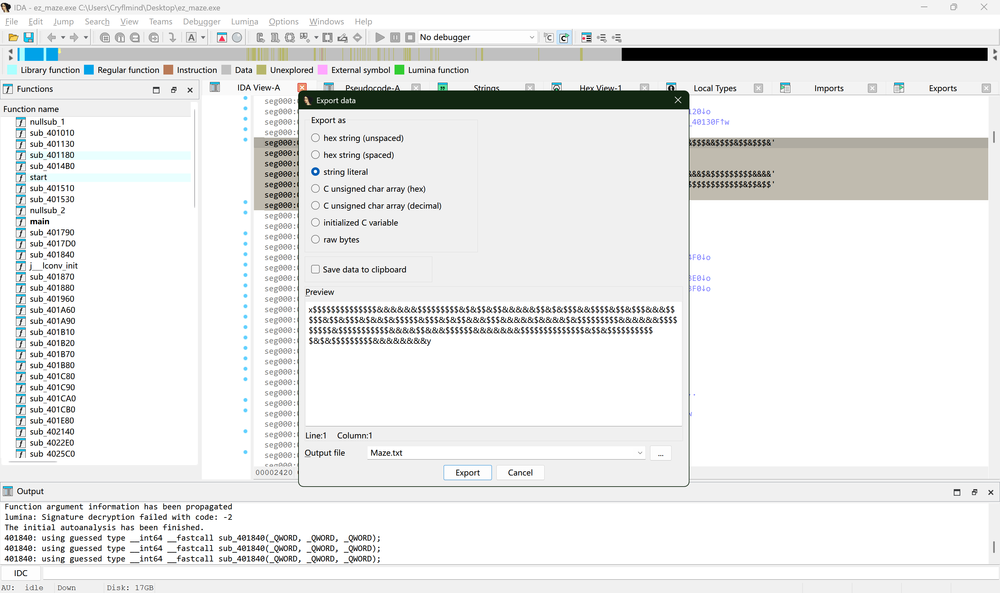
于是我们就可以得到：
x$$$$$$$$$$$$$$&&&&&&$$$$$$$$$&$&$$&$$&&&&&$$&$&$$$&&$$$$&$$&$$$&&&$$$$$&$$&$$$&$&&$&$$$$$&$$$&$&$$&&&$$$&&&&&$&&&&$&$$$$$$$$$&&&&&&$$$$$$$$$&$$$$$$$$$$$&&&&$$&&&$$$$$$&&&&&&&$$$$$$$$$$$$$$&$$&$$$$$$$$$$$&$&$$$$$$$$$&&&&&&&&y
根据前面的走迷宫程序，我们可以判断这是一个 15 * 15 的迷宫，根据题目要求 Take the shortest path to the finish line.OK? plz BaseCTF{lower.MD5{your path}} by 32bit ，你只需要提交最短路径对应的32位小写MD5值即可，这里就不进行计算了。
总结¶
总的来说，IDA 的使用其实并不困难。
虽然本文依旧用了很大的篇幅去介绍 IDA 的相关使用，但如果读者可以完整的跟随教程完成这两道题目的话，相信读者也已经体会到了 IDA 的魅力了。
限于篇幅，如果读者对 IDA 的其他功能或快捷键也感兴趣的话，可以自主学习一下相关内容，这里就不过多展开了。
后续读者如果想要尝试其他题目的话，可以前往BaseCTF 2024完成前两个Week的大多数逆向题目，或者去其他靶场刷刷题熟悉一下工具的使用。
请时刻记得： 不顺手的工具，终是负担。